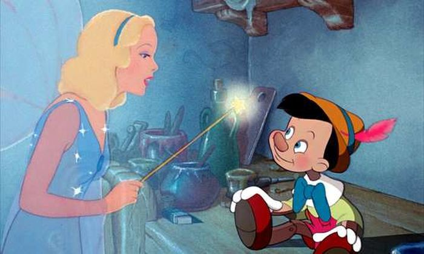
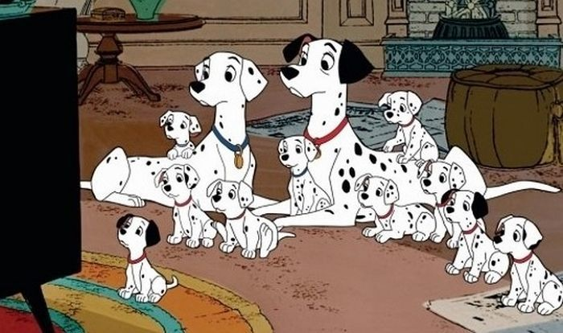

Recommend TOP 6
-
Snow White and the Seven Dwarfs
(1937)
그림 형제의 동화를 원작으로 제작한 디즈니 최초의 장편애니메이션
착한 백설공주가 그녀의 계모로부터 벗어나 숲속으로 가면서 이야기가 시작되죠
그곳에서 동물들과 일곱난쟁이들의 도움을 받고
잘 살고 있는 어느날
백설공주에게 할머니로 변장한 계모가 나타납니다
할머니로 변장한 계모는 백설공주에게 독사과를 건네고
아무것도 모르는 백설공주는 그 사과를 한입 베어물죠
과연 백설공주는 무사할 수 있을까요?
▷영화 보러가기
Pinocchio
(1940)

인간이 되고 싶었던 인형 피노키오
피노키오는 인형제작자 제페토가 만든 인형입니다
제페토가 별을 보며 피노키오가 정말 사람이 되었으면 좋겠다 한 기도덕에
푸른요정이 나타나 피노키오에게 생명을 불어넣어주죠
단, 한가지 약점이 있어요
바로 거짓말을 하면 코가 길어지는 것!
▷영화 보러가기
Cinderella
(1950)
마음씨 고운 신데렐라는 계모와 못된 언니 둘에게 괴롭힘을 당하며 삽니다
그녀의 친구는 오직 생쥐 거스와 자크, 그리고 동물들뿐이죠
그러던 어느날 왕궁에서 무도회가 열립니다
가고 싶지만
자신의 초라한 모습때문에 못가던 신데렐라
갑자기 그녀의 앞에 요정이 나타나 멋진 드레스와 마차를 선물해주는데요
하지만 조심하세요! 밤 12시가 지나면 마법이 풀립니다
▷영화 보러가기
Alice in Wonderland
(1951)
"루이스 캐롤의 원작소설로 제작한 흥미로운 이야기죠
어느날 언니의 이야기를 들으며 졸던 앨리스가 하얀 토끼를 보고
토끼를 뒤쫓아 토끼구멍 속으로 들어가게되죠
근데 그곳은 현실과는 완전 다른 세상이였습니다
앨리스가 작아졌다 커지고 사물들이 말을하죠
신비하고 이상한 나라에서 앨리스의 모험이 시작됩니다!
▷영화 보러가기
Sleeping Beauty
(1959)
차이콥스키의 발레를 각색하여 만든 디즈니가 가장 공을 들인 작품!
축복속, 오로라 공주가 태어나고 초대받은 요정들이 공주에게 축복을 내려줍니다
하지만 어디에나 불청객은 있죠
갑자기 초대받지 못한 마녀가 등장해 공주에게 저주를 내립니다
16세 생일날 물레 바늘이 손가락이 찔려 죽을 것이라는 저주를 말이죠
결국 공주는 16세 생일날 저주를 받게되고
깊은잠에 빠지는데요
과연 공주는 깊은 잠에서 깨어날 수 있을까요?
▷영화 보러가기
One Hundred and One Dalmatians
(1961)

도디 스미스의 101마리 개들의 대행진을 원작으로 만든 영화
최근 디즈니의 <크루엘라>라는 영화로 다시 주목을 받은 작품이죠
악녀 크루엘라 드빌의 하수인에 강아지들이 납치되고
강아지들의 부모들이 그들을 찾는 내용인데요
이전까지의 디즈니 작품들과는 달리
판타지적인 요소를 많이 쓰지 않은 작품이라고 합니다
▷영화 보러가기
-